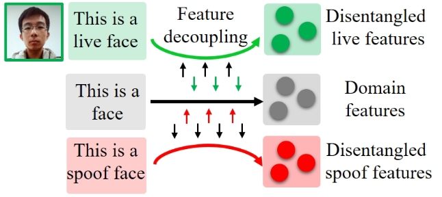
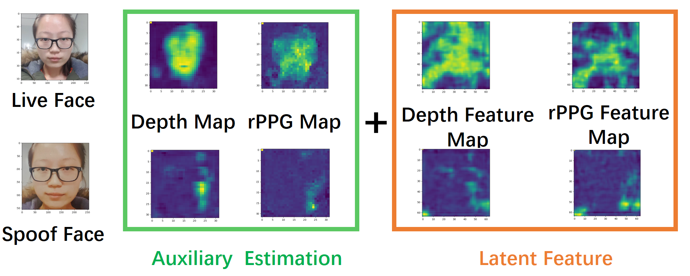

Peikai Huang (Pei-Kai Huang, 黄培凯)
 |
PhD Candidate |
About me
I am about to return to my alma mater, Fujian Normal University, for a faculty position. I am currently a Phd Candidate at National Tsing Hua University. I've received the bachelor degree from Fujian Normal University in 2017, and the master degree from National Central University in 2019. I live in Xiamen, China.
My research area focuses on face anti-spoofing and rPPG Estimation.As the first author, I have been published in prestigious conferences in the field of computer vision, including CVPR, AAAI, BMVC, ICME, ICIP, and ACPR, as well as in renowned journals, including Information Science and ATSIP.
I have reviewed papers from different CV/AI conferences, e.g., CVPR, ECCV, AAAI, ACM MM, ICME, BMVC, and ICIP, and biomedical related journals, e.g., TIFS, TIM, TBME, BSPC.
Preprint
|
Fully Test-Time rPPG Estimation via Synthetic Signal-Guided Feature Learning
Pei-Kai Huang, Tzu-Hsien Chena, Ya-Ting Chana, Kuan-Wen Chena, Shih-Yu Yanga, Yen-Chun Choua, Chiou-Ting Hsu Pattern Recognition, (Major revision) , [中科院一区Top, CCF B,TH-CPL Rank B, SCIE:Q1, IF:7.5, h-index:180] Paper | Code | Video |
|
Enhancing Learnable Descriptive Convolutional Vision Transformer for Face Anti-Spoofing
Pei-Kai Huang, Jun-Xiong Chong, Ming-Tsung Hsu, Fang-Yu Hsu, Chiou-Ting Hsu Pattern Recognition, (Major revision) , [中科院一区Top, CCF B,TH-CPL Rank B, SCIE:Q1, IF:7.5, h-index:180] Paper | Code | Video |
|
DD-rPPGNet: De-interfering and Descriptive Feature Learning for Unsupervised rPPG Estimation
Pei-Kai Huang, Tzu-Hsien Chen, Ya-Ting Chan, Kuan-Wen Chen, Chiou-Ting Hsu IEEE Transactions on Information Forensics & Security (TIFS), (Accept with mandatory minor revision) , [中科院一区Top, CCF A,TH-CPL Rank A, SCIE:Q1, IF:6.3, h-index:95] Paper | Code| Video |
Publications (Journal)

|
Channel difference transformer for face anti-spoofing
Pei-Kai Huang, Jun-Xiong Chong, Ming-Tsung Hsu, Fang-Yu Hsu, Chiou-Ting Hsu Information Sciences, 2025 [中科院二区, CCF B,TH-CPL Rank B , SCIE:Q1] Paper | Code |
|
A Survey on Deep Learning-based Face Anti-Spoofing
Pei-Kai Huang, Jun-Xiong Chong, Ming-Tsung Hsu, Fang-Yu Hsu, Cheng-Hsuan Chiang, Tzu-Hsien Chen, Chiou-Ting Hsu APSIPA Transactions on Signal and Information Processing, 2024 [中科院三区, ESCI:Q1, IF:3.2, h-index:25] Paper |
Publications (Conference)
|  |
SLIP: Spoof-aware one-class face anti-spoofing with Language Image Pretraining
Pei-Kai Huang, Jun-Xiong Chong, Cheng-Hsuan Chiang, Tzu-Hsien Chen, Tyng-Luh Liu, Chiou-Ting Hsu. The 39th Annual AAAI Conference on Artificial Intelligence (AAAI), 2025, USA. , [CORE Rank A*, CCF A, TH-CPL Rank A ] Paper | Code | Poster |
|
One-Class Face Anti-spoofing via Spoof Cue Map-Guided Feature Learning
Pei-Kai Huang, Cheng-Hsuan Chiang, Tzu-Hsien Chen, Jun-Xiong Chong, Tyng-Luh Liu, Chiou-Ting Hsu The IEEE/CVF Conference on Computer Vision and Pattern Recognition (CVPR), 2024, Seattle WA, USA., [h5-index:422, CORE Rank A*, CCF A, TH-CPL Rank A ] Paper | Code | Video | Poster |
|
Test-Time Adaptation for Robust Face Anti-Spoofing
Pei-Kai Huang, Chen-Yu Lu, Shu-Jung Chang, Jun-Xiong Chong, Chiou-Ting Hsu British Machine Vision Conference (BMVC), 2023, Aberdeen, UK, [h5-index:75, CORE Rank A, CCF C, TH-CPL Rank B ] Paper | Code | Video | Poster |

|
LDCformer: Incorporating Learnable Descriptive Convolution to Vision Transformer for Face Anti-Spoofing
Pei-Kai Huang, Cheng-Hsuan Chiang, Jun-Xiong Chong, Tzu-Hsien Chen, Hui-Yu Ni, Chiou-Ting Hsu IEEE International Conference on Image Processing (ICIP), 2023, Kuala Lumpur, Malaysia, [h5-index:60, CORE Rank B, CCF C, TH-CPL Rank B ] Paper | Code | Video | Poster |
|
Single-Domain Generalization for Semantic Segmentation via Dual-level Domain Augmentation
Shu-Jung Chang*, Chen-Yu Lu*, Pei-Kai Huang*, Chiou-Ting Hsu (* equal contribution) IEEE International Conference on Image Processing (ICIP), 2023, Kuala Lumpur, Malaysia, [h5-index:60, CORE Rank B, CCF C, TH-CPL Rank B ] Paper | Video | Oral |

|
Towards Diverse Liveness Feature Representation and Domain Expansion for Cross-Domain Face Anti-Spoofing
Pei-Kai Huang, Jun-Xiong Chong, Hui-Yu Ni, Tzu-Hsien Chen, Chiou-Ting Hsu IEEE International Conference on Multimedia & Expo (ICME), 2023, Brisbane, Australia, [h5-index:40, CORE Rank A, CCF B] Paper | Code | Video | Poster |

|
Learnable Descriptive Convolutional Network for Face Anti-Spoofing
Pei-Kai Huang, Hui-Yu Ni, Yan-Qin Ni, Chiou-Ting Hsu British Machine Vision Conference (BMVC), 2022, London, UK, [h5-index:75, CORE Rank A, CCF C, TH-CPL Rank B ] Paper | Code | Video | Poster |
|
Learning to Augment Face Presentation Attack Dataset via Disentangled Feature Learning from Limited Spoof Data
Pei-Kai Huang, Chu-Ling Chang, Hui-Yu Ni, Chiou-Ting Hsu IEEE International Conference on Multimedia & Expo (ICME), 2022, Taipei, Taiwan, [h5-index:40, CORE Rank A, CCF B] Paper | Video | Oral |
|  |